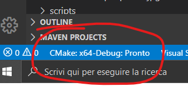
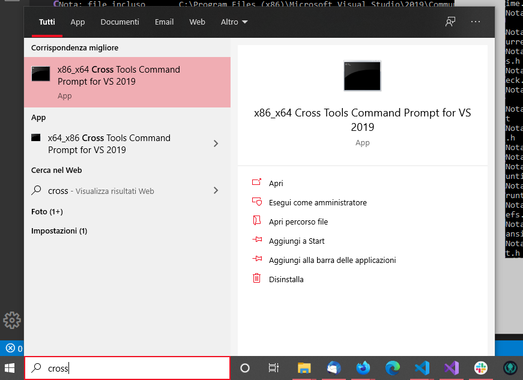
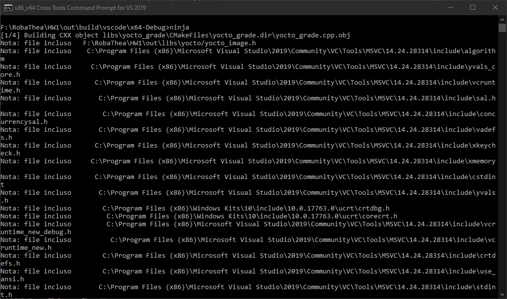

Come compilare l’homework
NOTA: Una volta che hai eseguito CMake per la prima volta puoi compilare direttamente con Ninja ogni volta che devi ricompilare qualcosa.
La compilazione dell’homework si basa tramite Ninja. Prima di poter compilare con Ninja, bisogna eseguire CMake per creare i file per la compilazione.
- Apri Visual Studio Code e assicurati di avere installati C++ e CMake Tools
- Apri la cartella
HW1/out/ con Visual Studio Code.
- Ti chiedera’ di configurare automaticamente CMake tools, conferma.
- Clicca in basso su “CMake etc. etc.” per compilare con CMake. Ti potrebbe chiedere la destinazione della compilazione, una qualsiasi destinazione x86 o x64 andra’ bene.

- Dopo che ha compilato, apri il terminale di Visual Studio con i developer tools, ti basta aprire la barra di ricerca di Windows e scrivere Cross tools x86 x64 Command prompt

- Vai nella cartella
HW1\out\build\vscode\x64-Debug tramite il comando cd e poi scrivi:
ninja
- Premi invio

- Se la compilazione avra’ successo, troverai i tuoi file in
HW1/out/bin/debug/, puoi trascinare un’immagine sopra yimgigrades.exe e te lo aprira’ con l’editor.